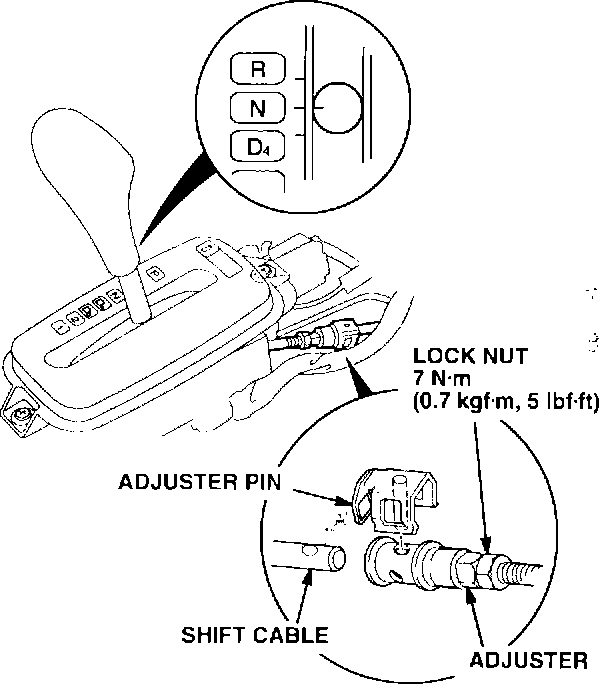
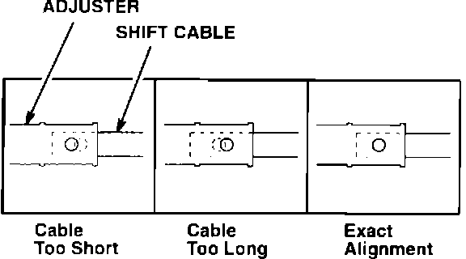
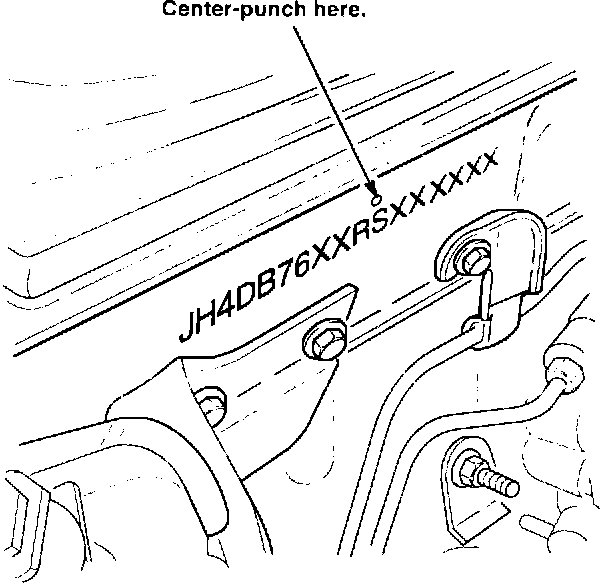
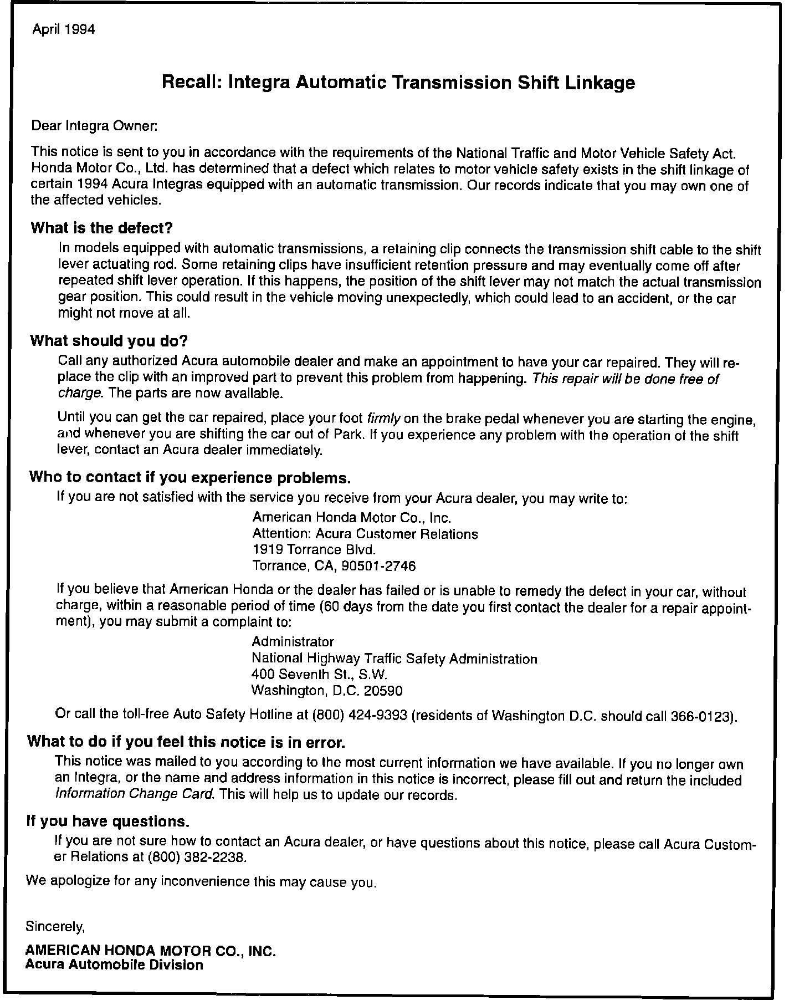

Recall - A/T Shift Linkage
BULLETIN NO.94-003
YEAR
1994
MODEL
INTEGRA
VIN APPLICATION
See VEHICLES AFFECTED
April 19, 1994
RECALL: Automatic Transmission Shift Linkage
BACKGROUND
In models equipped with automatic transmissions, a retaining clip connects the transmission shift cable to the shift lever actuating rod. Some retaining clips have insufficient retention pressure and may eventually come off after repeated shift lever operation. If this happens, the position of the shift lever may not match the actual transmission gear position. This could result in the vehicle moving unexpectedly, which could lead to an accident, or the car might not move at all.
CUSTOMER NOTIFICATION
All owners of affected vehicles will be notified of this recall by mail. Owners will be asked to contact an authorized Acura dealer for repairs. A copy of the customer letter is at the end of this service bulletin.
VEHICLES AFFECTED
3-door: from VIN JH4DC44 ... RS000020
thru RS012235
4-door: from VIN JH4DB76 ... RS000010
thru RS000127
CORRECTIVE ACTION
Replace the transmission shift linkage adjuster pin with the new part listed under PARTS INFORMATION.
1. Remove the center console.
2. Move the transmission selector lever to Neutral.

3. Remove the adjuster pin from the shift linkage and discard it.
4. Install the new adjuster pin.
^ If the pin feels like it is binding, continue to step 5 to check the shift linkage adjustment.
^ If the pin fits without binding, go to step 6.

5. Remove the adjuster pin. If the holes in the shift cable and the adjuster are not perfectly aligned, loosen the locknut and turn the adjuster to align the holes. Tighten the locknut and reinstall the adjuster pin.
6. Start the engine. Move the selector lever through all the shift positions and verify that it selects the proper gears.
7. Reinstall the console.

8. Center-punch a completion mark above the eleventh character (S) of the engine compartment VIN.
PARTS INFORMATION
Adjuster pin: P/N 54363-689-981
WARRANTY CLAIM INFORMATION
Operation number: 214120
Flat rate time: 0.4 hour
Failed P/N: 54363-SP0-A81
Defect code: 272
Contention code: J81

Example of Customer Letter.